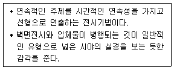
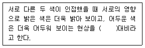
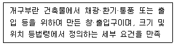
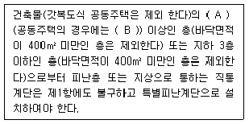
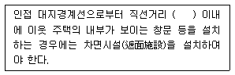
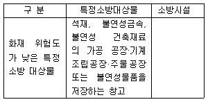

실내건축산업기사 (2018-08-19 기출문제)
1과목: 실내디자인론
1. 공간을 에워싸는 수직적 요소로 수평방향을 차단하여 공간을 형성하는 기능을 하는 것은?
- 벽
- 보
- 바닥
- 천장
(정답률: 90%)

2. 착시현상의 내용으로 옳지 않은 것은?
- 같은 길이의 수평선이 수직선보다 길어 보인다.
- 사선이 2개 이상의 평행선으로 중단되면 서로 어긋나 보인다.
- 같은 크기의 도형이 상하로 겹쳐져 있을 때 위의 것이 커 보인다.
- 검정 바탕에 흰 원이 동일한 크기의 흰 바탕에 검정 원보다 넓게 보인다.
(정답률: 57%)
3. 공동주택의 평면형식 중 계단실형(홀형)에 관한 설명으로 옳은 것은?
- 통행부의 면적이 작아 건물의 이용도가 높다.
- 1대의 엘리베이터에 대한 이용 가능한 세대수가 가장 많다.
- 각 층에 있는 공용 복도를 통해 각 세대로 출입하는 형식이다.
- 대지의 이용률이 높아 도심지내의 독신자용 공동주택에 주로 이용된다.
(정답률: 53%)
4. 실내 공간의 형태에 관한 설명으로 옳지 않은 것은?
- 원형의 공간은 중심성을 갖는다.
- 정방형의 공간은 방향성을 갖는다.
- 직사각형의 공간에서는 깊이를 느낄 수 있다.
- 천장이 모인 삼각형 공간은 높이에 관심이 집중된다.
(정답률: 72%)
5. 디자인을 위한 조건 중 최소의 재료와 노력으로 최대의 효과를 얻고자 하는 것은?
- 독창성
- 경제성
- 심미성
- 합목적성
(정답률: 84%)
6. 바탕과 도형의 관계에서 도형이 되기 쉬운 조건에 관한 설명으로 옳지 않은 것은?
- 규칙적인 것은 도형으로 되기 쉽다.
- 바탕 위에 무리로 된 것은 도형으로 되기 쉽다.
- 명도가 높은 것보다 낮은 것이 도형으로 되기 쉽다.
- 이미 도형으로서 체험한 것은 도형으로 되기 쉽다.
(정답률: 78%)
7. 개방형 (open plan) 사무공간에 있어서 평면계획의 기준이 되는 것은?
- 책상배치
- 설비시스템
- 조명의 분포
- 출입구의 위치
(정답률: 69%)
8. 디자인의 원리 중 균형에 관한 설명으로 옳지 않은 것은?
- 대칭적 균형은 가장 완전한 균형의 상태이다.
- 비대칭 균형은 능동의 균형, 비정형 균형이라고도 한다.
- 방사형 균형은 한 점에서 분산되거나 중심점에서부터 원형으로 분산되어 표현된다.
- 명도에 의해서 균형을 이끌어 낼 수 있으나 색채에 의해서는 균형을 표현할 수 없다.
(정답률: 83%)
9. 다음 설명 에 알맞은 전시공간의 특수전시기법은?

- 디오라마 전시
- 파노라마 전시
- 아일랜드 전시
- 하모니카 전시
(정답률: 73%)
10. 상품의 유효진열범위에서 고객의 시선이 자연스럽게 머물고, 손으로 잡기에도 편한 높이인 골든 스페이스(Golden Space)의 범위는?
- 500 ~ 850mm
- 850 ~ 1250mm
- 1250 ~ 1400mm
- 1400 ~ 1600mm
(정답률: 86%)
11. 소파나 의자 옆에 위치하며 손이 쉽게 닿는 범위내에 전화기, 문구 등 필요한 물품을 올려놓거나 수납하며찻잔, 컵 등을 올려놓기도 하여 차 탁자의 보조용으로도 사용되는 테이블은?
- 티 테이블(tea table)
- 엔드 테이블(end table)
- 나이트 테이블(night table)
- 익스텐션 테이블 (extension table)
(정답률: 64%)
12. 실내디자인 요소 중 선에 관한 설명으로 옳지 않은 것은?
- 많은 선을 근접시키면 면으로 인식된다.
- 수직선은 공간을 실제보다 더 높아 보이게 한다.
- 수평선은 무한, 확대, 안정 등 주로 정적인 느낌을 준다.
- 곡선은 약동감, 생동감 넘치는 에너지와 운동감, 속도감을 준다.
(정답률: 72%)
13. 건축화조명방식에 관한 설명으로 옳지 않은 것은?
- 밸런스 조명은 창이나 벽의 커튼 상부에 부설된 조명이다.
- 코브 조명은 반사광을 사용하지 않고 광원의 빛을 직접 조명하는 방식이다.
- 광창 조명은 넓은 면적의 벽면에 매입하여 비스타(vista)적인 효과를 낼 수 있다.
- 코니스 조명은 벽면의 상부에 위치하여 모든 빛이 아래로 직사하도록 하는 조명방식이다.
(정답률: 74%)
14. 실내계획에 있어서 그리드 플래닝(grid planning)을 적용하는 전형적인 프로젝트는?
- 사무소
- 미술관
- 단독주택
- 레스토랑
(정답률: 75%)
15. 스툴(stool)의 종류 중 편안한 휴식을 위해 발을 올려놓는 데도 사용되는 것은?
- 세티
- 오토만
- 카우치
- 체스터필드
(정답률: 75%)
16. 부엌에서의 작업 순서를 고려한 효율적인 작업대의 배치 순서로 알맞은 것은?
- 준비대→조리대→가열대→개수대→배선대
- 개수대→준비대→가열대→조리대→배선대
- 준비대→개수대→조리대→가열대→배선대
- 개수대→조리대→준비대→가열대→배선대
(정답률: 86%)
17. 일광 조절 장치에 속하지 않는 것은?
- 커튼
- 루버
- 코니스
- 블라인드
(정답률: 75%)
18. 창에 관한 설명으로 옳지 않은 것은?
- 고정창은 비교적 크기와 형태에 제약없이 자유로이 디자인할 수 있다.
- 창의 높낮이는 가구의 높이와 사람의 시선 높이에 영향을 받는다.
- 충분한 보온과 개폐의 용이를 위해 창은 가능한 크게하는 것이 좋다.
- 창은 채광, 조망, 환기, 통풍의 역할을 하며 벽과 천장에 위치할 수 있다.
(정답률: 70%)
19. 단독주택의 현관에 관한 설명으로 옳은 것은?
- 거실의 일부를 현관으로 만드는 것이 좋다.
- 바닥은 저명도·저채도의 색으로 계획하는 것이 좋다.
- 전실을 두지 않으며 현관문은 미닫이문을 사용하는 것이 좋다.
- 현관문은 외기와의 환기를 위해 거실과 직접 연결되도록 하는 것이 좋다.
(정답률: 64%)
20. 상점 내 동선계획에 관한 설명으로 옳지 않은 것은?
- 고객 동선은 짧고 간단하게 하는 것이 좋다.
- 직원 동선은 되도록 짧게 하여 보행 및 서비스 거리를 최대한 줄이는 것이 좋다.
- 고객 동선과 직원 동선이 만나는 곳에는 카운터 및 쇼케이스를 배치하는 것이 좋다.
- 고객 동선은 흐름의 연속성이 상징적·지각적으로 분할되지 않는 수평적 바닥이 되도록 하는 것이 좋다.
(정답률: 84%)
2과목: 색채 및 인간공학
21. 기계가 인간을 능가하는 기능으로 볼 수 있는 것은? (단, 인공지능은 제외 한다.)
- 귀납적으로 추리, 분석한다.
- 새로운 개념을 창의적으로 유도한다.
- 다양한 경험을 토대로 의사결정을 한다.
- 구체적 요청이 있을 때 정보를 신속, 정확하게 상기한다.
(정답률: 76%)
22. 인간의 동작 중 굴곡에 관한 설명이 맞는 것은?
- 손바닥을 아래로
- 부위간의 각도 감소
- 몸의 중심선으로의 이동
- 몸의 중심선으로의 회전
(정답률: 61%)
23. 동작경제의 원리에 관한 내용으로 틀린 것은?
- 가능하다면 낙하식 운반방법을 사용한다.
- 자연스러운 리듬이 생기도록 동작을 배치한다.
- 두 손의 동작은 동시에 시작하고, 각각 끝나도록 한다.
- 두 팔의 동작은 서로 반대방향으로 대칭되도록 움직인다.
(정답률: 65%)
24. 일반적으로 인간공학 연구에서 사용되는 기준의 요건이 아닌 것은?
- 적절성
- 고용률
- 무오염성
- 기준 척도의 신뢰성
(정답률: 67%)
25. 소리에 관한 설명으로 틀린 것은?
- 굴절현상 시 진동수는 변함없다.
- 저주파일수록 회절이 많이 발생 한다.
- 반사 시 입사각과 반사각은 동일하다.
- 은폐(masking)효과는 은폐음과 피은폐음의 종류와 무관하다.
(정답률: 53%)
26. 정신적 피로의 징후가 아닌 것은?
- 긴장감 감퇴
- 의지력 저하
- 기억력 감퇴
- 주의 범위가 넓어짐
(정답률: 78%)
27. 랜돌트의 링(Landholt ring)과 관계가 깊은 것은?
- 시력측정
- 청력측정
- 근력측정
- 심전도측정
(정답률: 62%)
28. 동일한 작업 시 에너지 소비량에 영향을 끼치는 인자가 아닌 것은?
- 심박수
- 작업방법
- 작업자세
- 작업속도
(정답률: 76%)
29. 조명의 적절성을 결정하는 요소가 아닌 것은?
- 작업의 형태
- 작업자 성별
- 작업에 나타나는 위험정도
- 작업이 수행되는 속도와 정확성
(정답률: 87%)
30. 패널레이아웃(panel layout) 설계시 표시 장치의 그룹핑에 가장 많이 고려하여야 할 설계원칙은?
- 접근성
- 연속성
- 유사성
- 폐쇄성
(정답률: 45%)
31. 음(音)과 색에 대한 공감각의 설명 중 틀린 것은?
- 저명도의 색은 낮은 음을 느낀다.
- 순색에 가까운 색은 예리한 음을 느끼게 된다.
- 회색을 띤 둔한 색은 불협화음을 느낀다.
- 밝고 채도가 낮은 색은 높은 음을 느끼게 된다.
(정답률: 60%)
32. 색각에 대한 학설 중 3원색설을 주장한 사람은?
- 헤링
- 영·헬름홀츠
- 맥니콜
- 먼셀
(정답률: 53%)
33. L*a*b*색 체계에 대한 설명으로 틀린 것은?
- a*와 b*는 모두 +값과 -값을 가질 수 있다.
- a*가 -값이면 빨간색 계열이다.
- b*가 +값이면 노란색 계열이다.
- L이 100이면 흰색이다.
(정답률: 50%)
34. 색채의 상징에서 빨강과 관련이 없는 것은?
- 정열
- 희망
- 위험
- 흥분
(정답률: 87%)
35. 다음 ( )의 내용으로 옳은 것은?

- 색상
- 채도
- 명도
- 동시
(정답률: 64%)
36. 색명을 분류하는 방법으로 톤(tone)에 대한 설명 중 옳은 것은?
- 명도만을 포함하는 개념이다.
- 채도만을 포함하는 개념이다.
- 명도와 채도를 포함하는 복합 개념이다.
- 명도와 색상을 포함하는 복합 개념이다.
(정답률: 69%)
37. 백터 방식(Vector)에 대한 설명으로 옳지 않은 것은?
- 일러스트레이터, 플래쉬와 같은 프로그램 사용방식이다.
- 사진 이미지 변형, 합성 등에 적절하다.
- 비트맵 방식보다 이미지의 용량이 적다.
- 확대 축소 등에도 이미지 손상이 없다.
(정답률: 48%)
38. 다음 중 색채에 대한 설명이 틀린 것은?
- 난색계의 빨강은 진출, 팽창되어 보인다.
- 노란색은 확대되어 보이는 색이다.
- 일정한 거리에서 보면 노란색이 파란색보다 가깝게 느껴진다.
- 같은 크기일 때 파랑, 청록 계통이 노랑, 빨강계열보다 크게 보인다.
(정답률: 76%)
39. 문·스펜서의 색채조화론에 대한 설명이 아닌 것은?
- 먼셀 표색계에 의해 설명된다.
- 색채 조화론을 보다 과학적으로 설명하도록 정량적으로 취급한다.
- 색의 3속성에 대하여 지각적으로 고른 색채단계를 가지는 독자적인 색입체로 오메가 공간을 설정하였다.
- 상호간에 어떤 공통된 속성을 가진 배색으로 등가색 조화가 좋은 예이다.
(정답률: 39%)
40. 먼셀기호 5B 8/4, N4에 관한 다음 설명 중 맞는 것은?
- 유채색의 명도는 5이다.
- 무채색의 명도는 8이다.
- 유채색의 채도는 4이다.
- 무채색의 채도는 N4이다.
(정답률: 51%)
3과목: 건축재료
41. 골재의 함수상태에 관한 식으로 옳지 않은 것은?
- 흡수량=(표면건조상태의 중량)-(절대건조상태의 중량)
- 유효흡수량=(표면건조상태의중량)-(기건상태의 중량)
- 표면수량=(습윤상태의 중량)-(표면건조상태의 중량)
- 전체함수량=(습윤상태의 중량)-(기건상태의 중량)
(정답률: 50%)
42. 석재의 성질에 관한 설명으로 옳지 않은 것은?
- 화강암은 온도상승에 의한 강도저하가 심하다.
- 대리석은 산성비에 약해 광택이 쉽게 없어진다.
- 부석은 비중이 커서 물에 쉽게 가라앉는다.
- 사암은 함유광물의 성분에 따라 암석의 질, 내구성, 강도에 현저한 차이가 있다.
(정답률: 54%)
43. 알루미늄과 철재의 접촉면 사이에 수분이 있을 때 알루미늄이 부식되는 현상은 어떠한 작용에 기인한 것인가?
- 열분해 작용
- 전기분해 작용
- 산화 작용
- 기상 작용
(정답률: 47%)
44. 회반죽바름 시 사용하는 해초풀은 채취 후 1~2년 경과된 것이 좋은데 그 이유는 무엇인가?
- 염분제거가 쉽기 때문이다.
- 점도가 높기 때문이다.
- 알칼리도가 높기 때문이다.
- 색상이 우수하기 때문이다.
(정답률: 61%)
45. 강화유리에 관한 설명으로 옳지 않은 것은?
- 판유리를 600℃ 이상의 연화점까지 가열한 후 급랭시켜 만든다.
- 파괴 시 파편이 예리하여 위험하다.
- 강도는 보통 유리의 3~5배 정도이다.
- 제조 후 현장가공이 불가하다.
(정답률: 77%)
46. 침엽수에 관한 설명으로 옳은 것은?
- 대표적인 수종은 소나무와 느티나무, 박달나무 등이다.
- 재질에 따라 경재(hard wood)로 분류된다.
- 일반적으로 활엽수에 비하여 직통대재가 많고 가공이 용이하다.
- 수선세포는 뚜렷하게 아름다운 무늬로 나타난다.
(정답률: 61%)
47. 금속 가공제품에 관한 설명으로 옳은 것은?
- 조이너는 얇은 판에 여러 가지 모양으로 도려낸 철물로서 환기구·라디에이터 커버 등에 이용된다.
- 펀칭메탈은 계단의 디딤판 끝에 대어 오르내릴 때 미끄러지지 않게 하는 철물이다.
- 코너비드는 벽·기둥 등의 모서리부분의 미장바름을 보호하기 위하여 사용한다.
- 논슬립은 천장·벽 등에 보드류를 붙이고 그 이음새를 감추고 누르는 데 쓰이는 것이다.
(정답률: 75%)
48. 콘크리트용 혼화제에 관한 설명으로 옳은 것은?
- 지연제는 굳지 않은 콘크리트의 운송시간에 따른 콜드 조인트 발생을 억제하기 위하여 사용된다.
- AE제는 콘크리트의 워커빌리티를 개선하지만 동결융해에 대한 저항성을 저하시키는 단점이 있다.
- 급결제는 초미립자로 구성되며 이를 사용한 콘크리트의 초기강도는 작으나, 장기강도는 일반적으로 높다.
- 감수제는 계면활성제의 일종으로 굳지 않은 콘크리트의 단위수량을 감소시키는 효과가 있으나 골재분리 및 블리딩 현상을 유발하는 단점이 있다0
(정답률: 41%)
49. 중밀도 섬유판을 의미하는 것으로 목섬유(wood fiber)에 액상의 합성수지 접착제, 방부제 등을 첨가·결합시켜 성형·열압하여 만든 것은?
- 파티클보드
- M.D.F
- 플로어링보드
- 집성목재
(정답률: 59%)
50. 아스팔트 방수공사에서 솔, 롤러 등으로 용이하게 도포할 수 있도록 아스팔트를 휘발성 용제에 용해한 비교적 저점도의 액체로서 방수시공의 첫 번째 공정에 사용되는 바탕처리재는?
- 아스팔트 컴파운드
- 아스팔트 루핑
- 아스팔트 펠트
- 아스팔트 프라이머
(정답률: 65%)
51. 회반죽의 주요 배합재료로 옳은 것은?
- 생석회, 해초풀, 여물, 수염
- 소석회, 모래, 해초풀, 여물
- 소석회, 돌가루, 해초풀, 생석회
- 돌가루, 모래, 해초풀, 여물
(정답률: 68%)
52. 다음 판유리제품 중 경도(硬度)가 가장 작은 것은?
- 플린트 유리
- 보헤미아 유리
- 강화유리
- 연(鉛)유리
(정답률: 74%)
53. 목재의 성질에 관한 설명으로 옳은 것은?
- 목재의 진비중은 수종, 수령에 따라 현저하게 다르다.
- 목재의 강도는 함수율이 증가하면 할수록 증대된다.
- 일반적으로 인장강도는 응력의 방향이 섬유방향에 평행한 경우가 수직인 경우보다 크다.
- 목재의 인화점은 400~490℃ 정도이다.
(정답률: 56%)
54. 플라스틱 재료의 특징으로 옳지 않은 것은?
- 가소성과 가공성이 크다.
- 전성과 연성이 크다.
- 내열성과 내화성이 작다.
- 마모가 작으며 탄력성도 작다.
(정답률: 61%)
55. 콘크리트 내구성에 관한 설명으로 옳지 않은 것은?
- 콘크리트 동해에 의한 피해를 최소화하기 위해서는 흡수성이 큰 골재를 사용해야 한다.
- 콘크리트 중성화는 표면에서 내부로 진행하며 페놀프탈레인 용액을 분무하여 판단한다.
- 콘크리트가 열을 받으면 골재는 팽창하므로 팽창균열이 생긴다.
- 콘크리트에 포함되는 기준치 이상의 염화물은 철근부식을 촉진시킨다.
(정답률: 61%)
56. 건축용 점토제품에 관한 설명으로 옳은 것은?
- 저온 소성제품이 화학저항성이 크다.
- 흡수율이 큰 제품이 백화의 가능성이 크다.
- 제품의 소성온도는 동해저항성과 무관하다.
- 규산이 많은 점토는 가소성이 나쁘다.
(정답률: 54%)
57. 수경성 미장재료로 경화·건조시 치수 안정성이 우수한 것은?
- 회사벽
- 회반죽
- 돌로마이트 플라스터
- 석고 플라스터
(정답률: 59%)
58. 합성수지도료에 관한 설명으로 옳지 않은 것은?
- 일반적으로 유성 페인트보다 가격이 매우 저렴하여 널리 사용된다.
- 유성페인트보다 건조시간이 빠르고 도막이 단단하다.
- 유성페인트보다 내산, 내알칼리성이 우수하다.
- 유성페인트보다 방화성이 우수하다.
(정답률: 54%)
59. 금속면의 보호와 금속의 부식방지를 목적으로 사용되는 도료는?
- 방화도료
- 발광도료
- 방청도료
- 내화도료
(정답률: 74%)
60. 점토제품 중 소성온도가 가장 높고 흡수성이 작으며 타일이나 위생도기 등에 쓰이는 것은?
- 토기
- 도기
- 석기
- 자기
(정답률: 74%)
4과목: 건축일반
61. 높이 31m를 넘는 각 층의 바닥면적 중 최대 바닥면적 이 6,000m2인 건축물에 설치해야 하는 비상용승강기의 최소설치 대수는? (단, 8인승 승강기임)
- 2대
- 3대
- 4대
- 5대
(정답률: 55%)
62. 무창층이란 지상층 중 다음에서 정의하는 개구부 면적의 합계가 해당 층 바닥면적의 얼마 이하가 되는 층으로 규정하는가?

- 1/10
- 1/20
- 1/30
- 1/40
(정답률: 64%)
63. 일반적인 방염대상물품의 방염성능기준에서 버너의 불꽃을 제거한 때부터 불꽃을 올리며 연소하는 상태가 그칠 때까지의 시간은 얼마 이내이어야 하는가?
- 10초
- 15초
- 20초
- 30초
(정답률: 66%)
64. 우리나라에 현존하는 목조 건축물 가운데 가장 오래된 것은?
- 수덕사 대웅전
- 부석사 무량수전
- 불국사 대웅전
- 봉정사 극락전
(정답률: 65%)
65. 구조체의 열용량에 관한 설명으로 옳지 않은 것은?
- 건물의 창면적비가 클수록 구조체의 열용량은 크다.
- 건물의 열용량이 클수록 외기의 영향이 작다.
- 건물의 열용량이 클수록 실온의 상승 및 하강 폭이 작다.
- 건물의 열용량이 클수록 외기온도에 대한 실내온도 변화의 시간지연이 있다.
(정답률: 51%)
66. 다음은 피난층 또는 지상으로 통하는 직통계단을 특별피난계단으로 설치하여야 하는 층에 관한 법령 사항이다. ( ) 안에 들어갈 내용으로 옳은 것은?

- A: 8층, B: 11층
- A: 8층, B: 16층
- A: 11층, B: 12층
- A: 11층, B: 16층
(정답률: 60%)
67. 건축물에 설치하는 계단 및 계단참의 유효너비 최소기준을 120cm 이상으로 적용하여야 하는 용도의 건축물이 아닌 것은?
- 문화 및 집회시설 중 공연장
- 고등학교
- 판매시설
- 문화 및 집회시설 중 집회장
(정답률: 55%)
68. 소화활동설비에 해당되는 것은?
- 스프링클러설비
- 자동화재탐지설비
- 상수도소화용수설비
- 연결송수관설비
(정답률: 48%)
69. 건축허가등을 할 때 미리 소방본부장 또는 소방서장의 동의를 받아야 하는 대상 건축물의 범위에 관한 기준으로 옳지 않은 것은?
- 연면적 400m2 이상인 건축물
- 항공기 격납고
- 방송용 송수신탑
- 승강기 등 기계장치에 의한 주차시설로서 자동차 10대 이상을 주차할 수 있는 시설
(정답률: 64%)
70. 피난설비 중 객석유도등을 설치하여야 할 특정소방대 상물은?
- 숙박시설
- 종교시설
- 창고시설
- 방송통신시설
(정답률: 55%)
71. 철근콘크리트 구조에 관한 설명으로 옳지 않은 것은?
- 철근과 콘크리트의 선팽창 계수는 거의 동일하므로 일체화가 가능하다.
- 철근콘크리트 구조에서 인장력은 철근이 부담하는 것으로 한다.
- 습식구조이므로 동절기 공사에 유의하여야 한다.
- 타구조에 비해 경량구조이므로 형태의 자유도가 높다.
(정답률: 67%)
72. 건축물의 피난·방화구조 등의 기준에 관한 규칙에서 규정한 방화구조에 해당하지 않는 것은?
- 시멘트모르타르위에 타일을 붙인 것으로서 그 두께의 합계가 2cm인 것
- 철망모르타르로서 그 바름두께가 2.5cm인 것
- 석고판 위에 시멘트모르타르를 바른 것으로서 그 두께의 합계가 3cm인 것
- 심벽에 흙으로 맞벽치기 한 것
(정답률: 51%)
73. 다음은 사생활 보호차원에서 설치하는 차면시설에 대한 설치 기준이다. ( ) 안에 들어 갈 내용으로 옳은 것은?

- 0.5m
- 1m
- 1,5m
- 2m
(정답률: 58%)
74. 르네상스 건축양식의 실내장식에 관한 설명으로 옳지 않은 것은?
- 실내장식 수법은 외관의 구성수법을 그대로 적용하였다.
- 실내디자인 요소로서 계단이 차지하는 비중은 작았다.
- 바닥마감은 목재와 석재가 주로 사용되었다.
- 문양은 그로테스크문양과 아라베스크문양이 주로 사용되었다.
(정답률: 64%)
75. 채광을 위하여 거실에 설치하는 창문 등의 면적확보와 관련하여 이를 대체할 수 있는 조명 장치를 설치하고자 할 때 거실의 용도가 집회용도의 회의기능일 경우 조도기준으로 옳은 것은? (단, 조도는 바닥에서 85cm의 높이에 있는 수평면의 조도임)
- 100lux 이상
- 200lux 이상
- 300lux 이상
- 400lux 이상
(정답률: 52%)
76. 20층의 아파트를 건축하는 경우 6층 이상 거실 바닥면적의 합계가 12,000m2일 경우에 승용승강기 최소 설치대수는? (단, 15인승 이하 승용승강기임)
- 2대
- 3대
- 4대
- 5대
(정답률: 51%)
77. 다음은 화재예방, 소방시설설치 유지 및 안전관리에 관한 법률 시행령에서 규정하고 있는 소방시설을 설치하지 아니할 수 있는 특정소방대상물 및 소방시설의 범위이다. 빈칸에 들어갈 소방시설로 옳은 것은?

- 스프링클러 설비
- 옥외소화전 및 연결살수설비
- 비상방송설비
- 자동화재탐지설비
(정답률: 56%)
78. 비상경보설비를 설치하여야 할 특정소방 대상물의기준으로 옳지 않은 것은? (단, 지하구, 모래·석재 등 불연재료 창고 및 위험물 저장·처리시설 중 가스시설은 제외)
- 연면적 400m2(지하가 중 터널 또는 사람이 거주하지 않거나 벽이 없는 축사 등 동·식 물 관련시설은 제외한다) 이상인 것
- 지하층 또는 무창층의 바닥면적이 150m2(공연장의 경우 100m2) 이상인 것
- 지하가 중 터널로서 길이가 500m 이상인 것
- 30명 이상의 근로자가 작업하는 옥내 작업장
(정답률: 67%)
79. 목구조의 장점에 해당되지 않는 것은?
- 재료의 강도, 강성에 대한 편차가 작고 균일하기 때문에 안전율을 매우 작게 설정할 수 있다.
- 경량이며, 중량에 비해 강도가 일반적으로 큰 편이다.
- 외관이 미려하고 감촉이 좋다.
- 증·개축이 용이하다.
(정답률: 59%)
80. 목구조의 왕대공 지붕틀에서 휨 과 인장력이 동시에 발생 가능한 부재는?
- 평보
- 빗대공
- ㅅ자보
- 왕대공
(정답률: 40%)